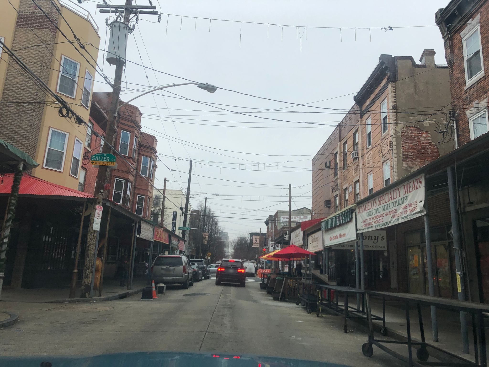

Seed
- The tangle of overhead wires cutting the flat gray sky into irregular quadrilaterals
- A red-and-white traffic cone sitting alone mid-street, no barrier or work around it
- "SPECIALTY MEATS" signage on the right, red field, yellow serif, slightly cropped
Wander
The wires aren't designed — they're *accreted*, each one a decision made by a different person in a different decade answering a different problem (power, then telephone, then cable, then fiber), and the sky ends up looking like a palimpsest more than a plan. This is what Stewart Brand called pace layering before he called it that: the fastest-moving infrastructure rides on top of the slowest, and nobody ever goes back and rationalizes the stack. You can see the same thing in an old codebase — a Rails app from 2011 with a React shim bolted on in 2017 and a GraphQL gateway bolted on in 2021, each layer added by someone who correctly judged it was cheaper to add than to refactor. The traffic cone is the same move at a different scale: a single orange object placed to mean "something is off here," no documentation, no ticket, and yet everyone understands it and drives around it. That's a *protocol* — lighter than a sign, heavier than a gesture, the municipal equivalent of a `TODO` comment that ends up outliving three full rewrites. I wonder if there's a taxonomy somewhere of disposable-but-persistent objects: the cone, the sawhorse, the reserved-parking lawn chair that Philadelphians actually have a name for (savesies). Every city's informal grammar is thicker than its formal one; the formal grammar is just what got litigated.
Branch
Savesies as a property-rights system — what else does a folding chair do that a statute can't?
Chose B
The savesies thread wants a fresh frame — turning onto a new street might surface a different informal grammar (a stoop, a mural, a shuttered window) that either extends or contradicts the folding-chair-as-statute idea without just repeating the wire-palimpsest beat.